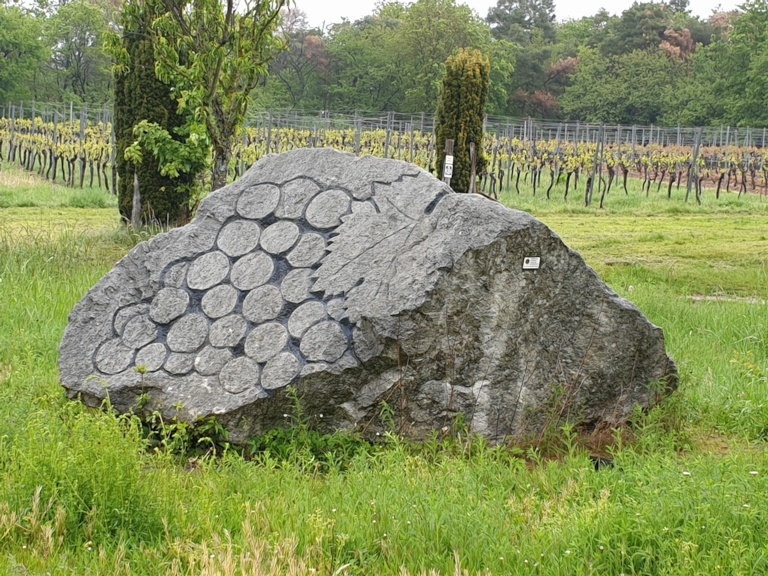
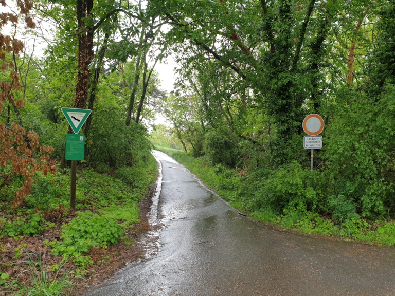
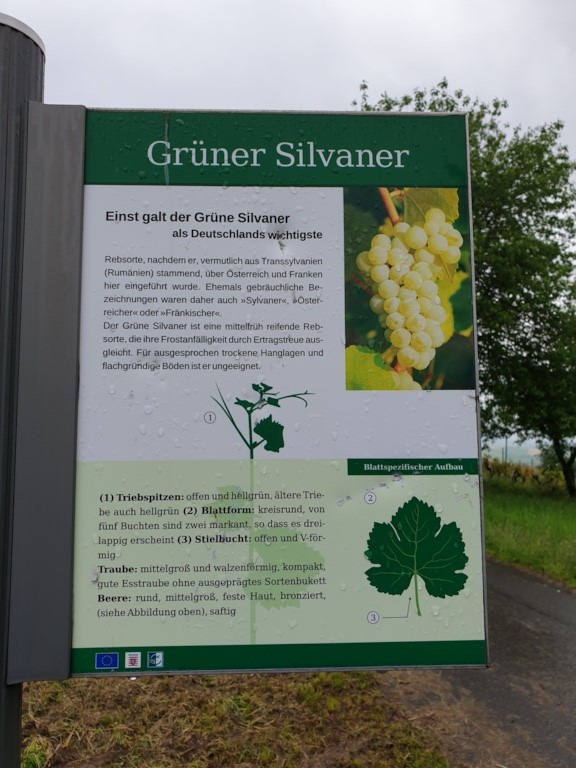
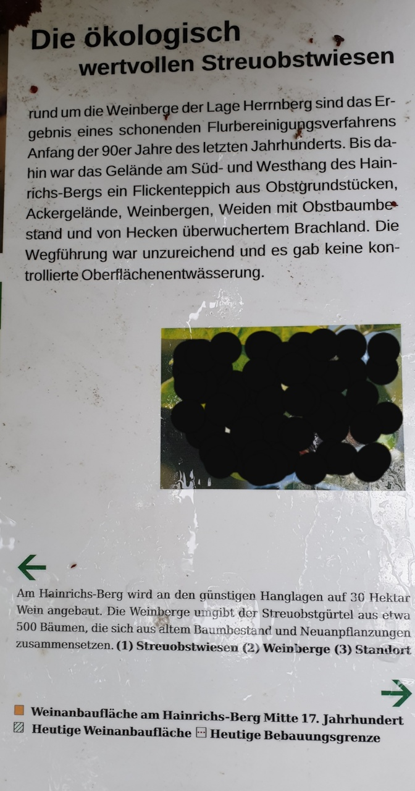
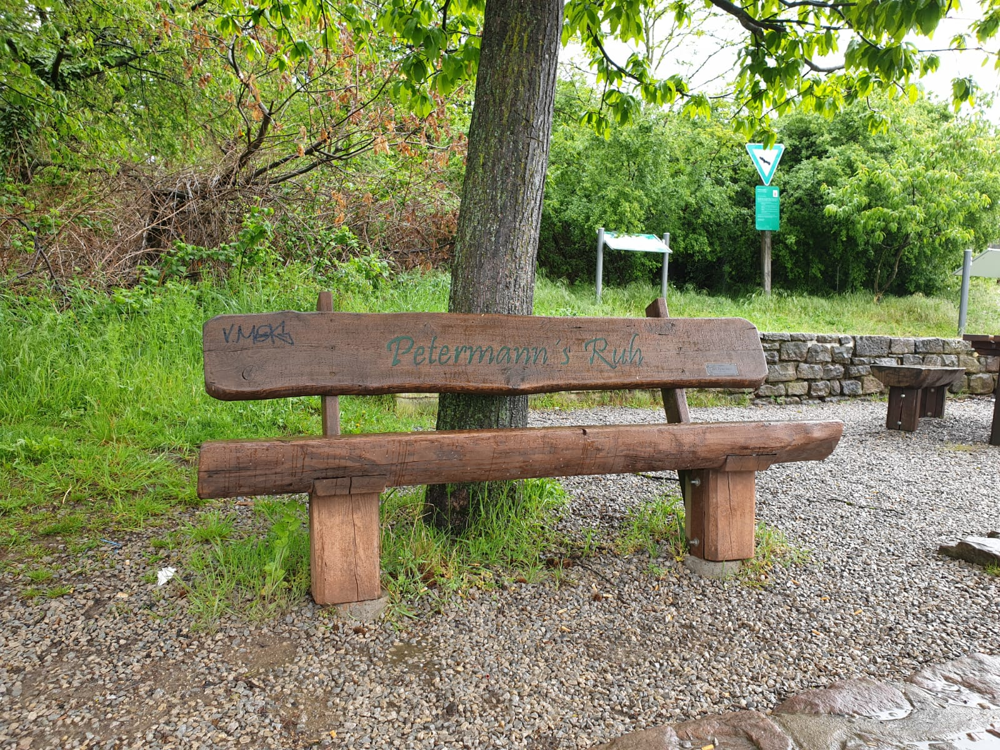

Von wem wurde die Errichtung der Steinweintraube unterstützt?
Jetzt geht’s hier lang:

Stellt euch an dieses Schild
Wieviele kleine Weinbergshütten seht ihr?

Wie viele Früchte sind auf dem geschwärzten Bild abgebildet?

Wenn ihr an der Petermann`s Ruh angekommen seid, schickt uns bitte ein Selfie mit allen Teilnehmern eurer Gruppe in die Autointerne Whatsappgruppe. Nach Eingang des Selfies bekommt ihr von uns ein Kinderlied genannt, welches ihr summen müsst und euch dabei filmen müsst. Dieses Video sendet ihr in die gemeinsame Whatsappgruppe. Jetzt müsst ihr auf die anderen Gruppen hoffen. Sobald von den anderen Gruppen euer Lied richtig erraten wurde, bekommt ihr von uns den Namen des nächsten Zielortes. Dann geht es wieder weiter.
Klappt das mit dem Summen nicht gut, darf im 2. Versuch auch lala verwendet werden, singen ist nicht erlaubt!
Es gibt mehr Punkte, wenn durch Summen das Lied erraten wird.